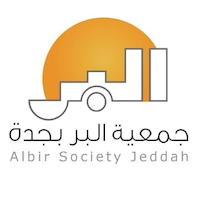

| Albir Society Orphanage - English Tutor |
As an English tutor at Albir Society Orphanage, I taught middle school students English and provided assistance with their other school work as needed.
This involved designing lesson plans, delivering lectures, conducting interactive activities, and providing regular feedback to help the students improve.
It was a fulfilling experience to support these students in their academic journeys. |
 |
| 3D printing and designing - 3D It |
During my training in 3D printing and designing, I learned to use the Rhinoceros 5 program for 3D designing. I also gained knowledge about the different types of printers and materials used in the 3D printing process.
Additionally, I was trained in 3D scanning objects to prepare them for printing. This experience allowed me to develop skills and expertise in the field of 3D printing and designing. |
|
| Photography |
I'm passionate about photography and enjoy capturing the beauty of nature and landscapes. I often go on hikes and travel to new places to take photos. I've won several awards in local photography contests. |
 |